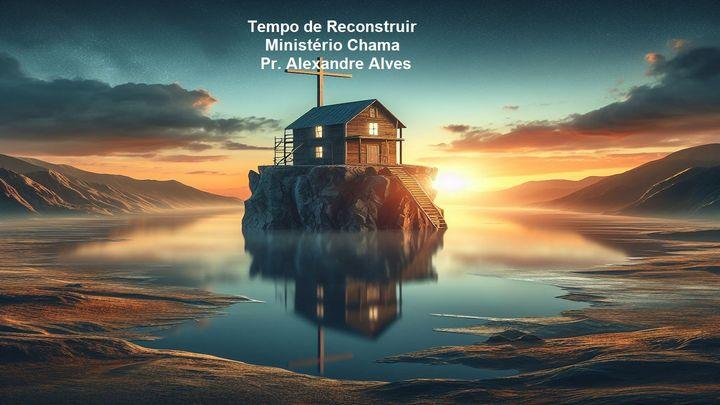

Tempo de Reconstruir

POR:Alexandre Alves
3 Dias
Reconstrua sua vida sobre o alicerce sólido de Cristo! Descubra como encontrar esperança e renovação em nosso devocional de três dias. Explore as verdades transformadoras das Escrituras e aprenda a edificar uma vida firme e resistente às tempestades da vida. Não perca esta oportunidade de reconstruir com Jesus. Comece hoje mesmo!
Gostaríamos de agradecer ao Ministério Chama por fornecer este plano. Para mais informações, visite: https://medita-na-palavra.blogspot.com/?m=1